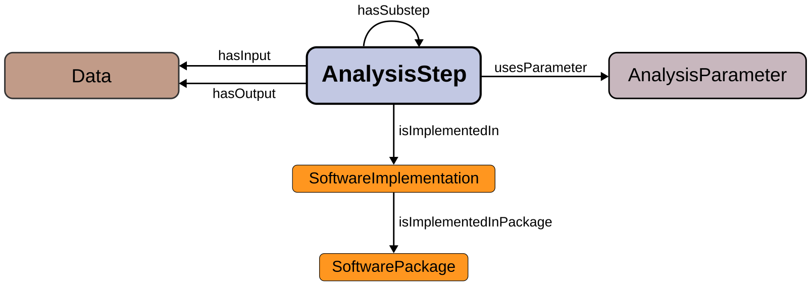

An overview of the main relationships is depicted in the diagram below:

The NEAO ontology model is constructed upon the central AnalysisStep class, that represents any process that generates new data entities (e.g., generating artificial spike trains) or performs specific operations aimed at extracting additional information during the analysis using existing data entities. For example, a time series with the raw signal recorded from an electrode can be low-pass filtered to extract the local field potential (LFP) component (the step produces transformed data). Additionaly, this new time series with the LFP data can be used in another step to compute the power spectral density (the step produces new, derived data). Therefore, every stage of the analysis generates new data or applies particular operations to data entities.
The inputs and outputs of the analysis steps are represented by the Data class. This represents any entity storing information needed throughout the analysis. It might represent the data created or transformed by an analysis step, or it can represent data from an electrophysiological recording obtained from neural tissue (or comparable data generated by a simulation). For example, the raw signal time series saved by the recording apparatus, the filtered LFP time series, and the array holding the power spectral density estimates are instances of the Data class.
An information entity that regulates the behavior of the analysis step is a parameter, and is represented by the AnalysisParameter class. A parameter does not provide data that is used by the step to produce the output. For example, in a low-pass filtering step in the analysis to produce the LFP, the time series with the raw wideband signal is the data input, and the low-pass frequency cutoff frequency value is a parameter.
The three core classes are related by the object properties hasInput, hasOutput, and usesParameter. Furthermore, several annotation properties are used to provide clear and unambiguous descriptions of the entities represented by the classes. These include abbreviations (abbreviation property), bibliographic references (hasBibliographicReference), labels (skos:prefLabel and skos:altLabel properties) and the class description (using rdfs:comment property).
For the disambiguation, the skos:prefLabel annotation property provides the preferred label to refer to the entity, and the rdfs:comment annotation provides details to understand the entity (e.g., details of the computation, inputs, and outputs involved in an analysis step). Synonyms are provided by the skos:altLabel property. The NEAO abbreviation annotation property provides suggested abbreviations.
The specific analysis method used in a step of the analysis can be implemented by different software codes, such as distinct open-source toolboxes that are available to analyze electrophysiology data. The core NEAO model has two classes describing the software implementation of the analysis step:
The main source of the code used to execute the operations involved in the analysis step is represented by the SoftwareImplementation class. This is the code that take any given data input, transform it, and produce the desired results.
The SoftwarePackage class is used to describe collections of software, such as toolboxes with many functionality for neuroelectrophysiology data analysis (i.e., that bundle together different pieces of code).
The relationship between SoftwareImplementation and SoftwarePackage is established with the property isImplementedInPackage. The relationship between the AnalysisStep and SoftwareImplementation is defined using the isImplementedIn property. The details of the individuals of each class are provided by distinct properties. The version property of SoftwareImplementation is used to define the version of the software. The packageName and packageVersion properties of SoftwarePackage specify the package name and version, respectively.
Program and Function are two subclasses of SoftwareImplementation that correspond to the two main approaches used to implement the code for an analysis step:
The entity represented by Program is an executable that has been compiled or a complete script that the operating system can call to perform the analysis step (for example, an executable that reads a file, computes the power spectral density using the Welch technique, and saves a file containing the power spectral density).
The entity represented by Function is a small, reusable code that is used as a building block in larger programs that execute several steps in the analysis.
Specific details of these two forms of implementing software are defined using additional properties. The nameInDefinition property in Function specifies the name that is used in the function declaration and in applications that utilize the function code. The programName property of Program specifies the name of the program as published.